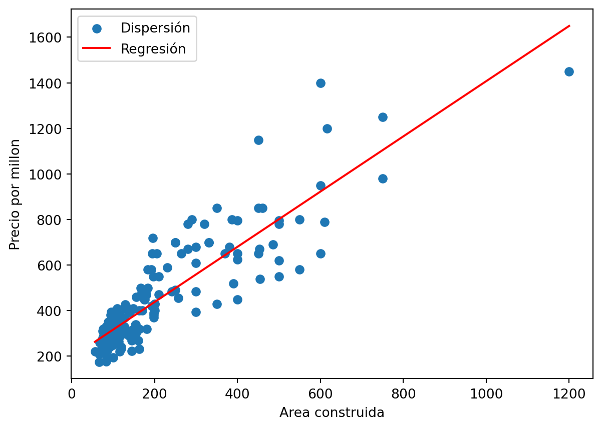
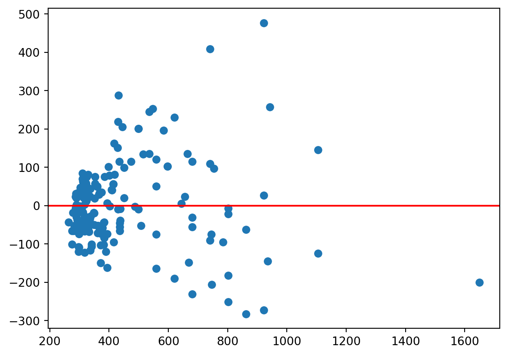
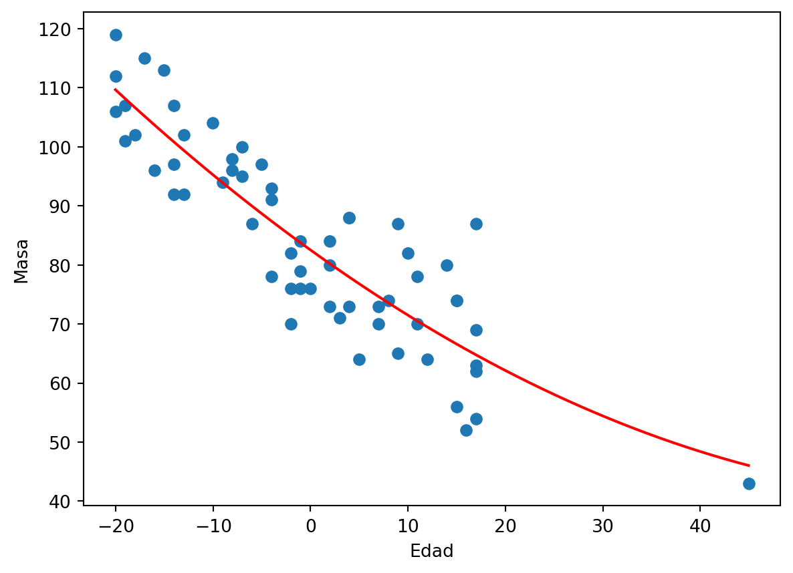
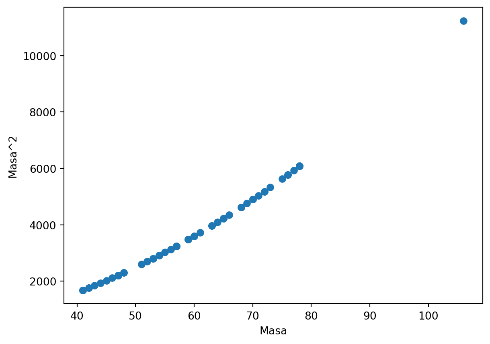
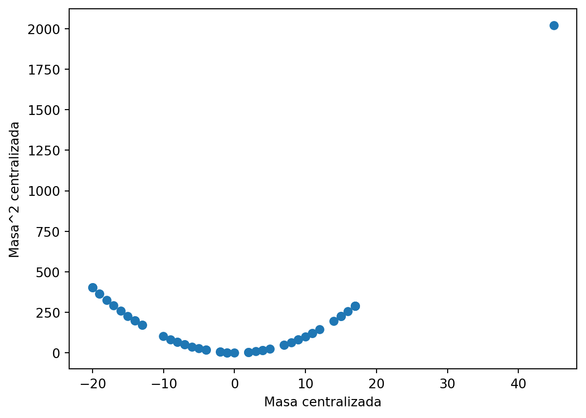

#se importan las librerias que se utilizaran para el desarrollo del parcial, se usará python como lenguaje de programación.
import pandas as pd
import numpy as np
import matplotlib.pyplot as plt
import scipy as sc
import statsmodels.api as sm
from sklearn.linear_model import LogisticRegressionParcial estadística avanzada
Eduardo Avendaño Caicedo
Para el primer punto se filtrará la base de datos:
df = pd.read_excel(r'C:\Users\Eduardo\Desktop\parcialEstadistica\datos.xlsx')
filtro = (df['Barrio'] == 'el ingenio') #aplicamos el filtro para el barrio "el ingenio"
df_filtrado1 = df.loc[filtro, ['precio_millon', 'Area_contruida']] #se seleccionan las variables de precio por millon y area construida
df_filtrado1| precio_millon | Area_contruida | |
|---|---|---|
| 36 | 1450.0 | 1200.0 |
| 122 | 290.0 | 100.0 |
| 220 | 360.0 | 99.0 |
| 581 | 550.0 | 197.0 |
| 2396 | 410.0 | 136.0 |
| ... | ... | ... |
| 6516 | 176.0 | 83.0 |
| 6894 | 980.0 | 750.0 |
| 7436 | 395.0 | 300.0 |
| 7462 | 230.0 | 85.0 |
| 7463 | 305.0 | 93.0 |
202 rows × 2 columns
Disponemos de dos variables: precio por millon y Area construida. La variable independiente para nuestro modelo será el área construida y el precio dependerá de esta:
#escribo ambas variables como vectores de numpy:
X=df_filtrado1['Area_contruida'].values
Y=df_filtrado1['precio_millon'].valuesPrimero se verificará el supuesto de normalidad en el conjunto de datos:
X=df_filtrado1['Area_contruida'].values
Y=df_filtrado1['precio_millon'].values
#procedemos a hacer el test de normalidad de Shapiro-Wilk utilizando la libería scipy:
stat1, pvalue1 = sc.stats.shapiro(X)
stat2, pvalue2 = sc.stats.shapiro(Y)
#realizamos las pruebas de hipotesis respecto a los valores 'p' obtenidos anteriormente:
#
alpha = 0.05
if pvalue1 > alpha:
print('No se rechaza la hipótesis nula: los datos X parecen ser normales, pvalor=' ,pvalue1)
else:
print('Se rechaza la hipótesis nula: los datos X no parecen ser normales, pvalor= ',pvalue1)
if pvalue2 > alpha:
print('No se rechaza la hipótesis nula: los datos Y parecen ser normales, pvalor=', pvalue2)
else:
print('Se rechaza la hipótesis nula: los datos Y no parecen ser normales, pvalor=',pvalue2)Se rechaza la hipótesis nula: los datos X no parecen ser normales, pvalor= 1.940874048622732e-18
Se rechaza la hipótesis nula: los datos Y no parecen ser normales, pvalor= 3.3113507934474408e-15Como vemos, nuestras variables de precio por millon y area construida no se distribuyen normalmente ya que tienen p-valores significativamente mas pequeños que nuestro nivel de significancia, se rechazan ambas hipotesis nula y concluimos que los datos no parecen ser normales.
Procedemos ahora a hacer nuestro modelo de regresión lineal:
a,b=np.polyfit(X,Y,1) #Regresión lineal simple
def aprox(x):return a*x+b #construimos nuestra función de aproximación
t=np.linspace(min(X),max(X))# construimos un vector auxiliar que nos ayude a visualizar nuestra aproximación
plt.scatter(X,Y,label='Dispersión')
plt.plot(t,aprox(t),'r',label='Regresión')
plt.xlabel('Area construida')
plt.ylabel('Precio por millon')
plt.legend()
print(a,b)1.2115947787538606 195.71496397620126
Procedemos ahora a hacer un gráfico de dispersión de los residuos de nuestro modelo:
residuos = Y - a*X - b
plt.scatter(a*X+b,residuos)
plt.axhline(y=0, color='r')<matplotlib.lines.Line2D at 0x23e14865610>
El diagrama de residuos sugiere que no hay homocedasticidad.
Nuestros datos no se distribuyen normalmente y no se cumple el supuesto de homocedasticidad, por otra parte, en nuestro diagrama de dispersión podemos ver inicialmente que existe cierta linealidad en las variables, sin embargo, no recomendaría utilizar la regresión lineal simple en este caso debido al incumplimiento de los dos supuestos mencionados anteriormente.
Para la siguiente parte de nuestro ejercicio, debemos incluir la variable ‘tipo’ y realizar una regresión categórica.
Iniciamos creando un nuevo “dataframe” filtrado el cual tenga esta variable:
df_filtrado2 = df.loc[filtro, ['precio_millon', 'Area_contruida','Tipo']]
df_filtrado2| precio_millon | Area_contruida | Tipo | |
|---|---|---|---|
| 36 | 1450.0 | 1200.0 | Casa |
| 122 | 290.0 | 100.0 | Apartamento |
| 220 | 360.0 | 99.0 | Apartamento |
| 581 | 550.0 | 197.0 | Apartamento |
| 2396 | 410.0 | 136.0 | Apartamento |
| ... | ... | ... | ... |
| 6516 | 176.0 | 83.0 | Apartamento |
| 6894 | 980.0 | 750.0 | Casa |
| 7436 | 395.0 | 300.0 | Casa |
| 7462 | 230.0 | 85.0 | Apartamento |
| 7463 | 305.0 | 93.0 | Apartamento |
202 rows × 3 columns
Para realizar el análisis debemos volver la variable ‘tipo’ es una variable dummie:
dummies = pd.get_dummies(df_filtrado2["Tipo"])
df_filtrado2 = pd.concat([df_filtrado2, dummies], axis=1)
df_filtrado2| precio_millon | Area_contruida | Tipo | Apartamento | Casa | |
|---|---|---|---|---|---|
| 36 | 1450.0 | 1200.0 | Casa | 0 | 1 |
| 122 | 290.0 | 100.0 | Apartamento | 1 | 0 |
| 220 | 360.0 | 99.0 | Apartamento | 1 | 0 |
| 581 | 550.0 | 197.0 | Apartamento | 1 | 0 |
| 2396 | 410.0 | 136.0 | Apartamento | 1 | 0 |
| ... | ... | ... | ... | ... | ... |
| 6516 | 176.0 | 83.0 | Apartamento | 1 | 0 |
| 6894 | 980.0 | 750.0 | Casa | 0 | 1 |
| 7436 | 395.0 | 300.0 | Casa | 0 | 1 |
| 7462 | 230.0 | 85.0 | Apartamento | 1 | 0 |
| 7463 | 305.0 | 93.0 | Apartamento | 1 | 0 |
202 rows × 5 columns
Teniendo nuestras variables dummies, crearemos vectores auxiliares “Aaux” y “Yaux” para agregar nuestras variables dependientes (Area y la variable categorica del tipo de vivienda) y nuestra variable independiente (precio):
Xaux= df_filtrado2[["Area_contruida", "Casa"]]
Yaux= df_filtrado2["precio_millon"]
Xaux= sm.add_constant(Xaux)
modeloCategorico = sm.OLS(Yaux, Xaux).fit() #OLS es la función de statsmodels equivalente a RC del lenguage de programación "R"
print(modeloCategorico.summary()) OLS Regression Results
==============================================================================
Dep. Variable: precio_millon R-squared: 0.802
Model: OLS Adj. R-squared: 0.800
Method: Least Squares F-statistic: 403.1
Date: Thu, 20 Apr 2023 Prob (F-statistic): 1.02e-70
Time: 12:33:53 Log-Likelihood: -1212.7
No. Observations: 202 AIC: 2431.
Df Residuals: 199 BIC: 2441.
Df Model: 2
Covariance Type: nonrobust
==================================================================================
coef std err t P>|t| [0.025 0.975]
----------------------------------------------------------------------------------
const 196.1196 10.916 17.967 0.000 174.594 217.645
Area_contruida 1.0220 0.056 18.196 0.000 0.911 1.133
Casa 99.2499 18.631 5.327 0.000 62.510 135.990
==============================================================================
Omnibus: 45.694 Durbin-Watson: 1.965
Prob(Omnibus): 0.000 Jarque-Bera (JB): 169.888
Skew: 0.835 Prob(JB): 1.29e-37
Kurtosis: 7.171 Cond. No. 674.
==============================================================================
Notes:
[1] Standard Errors assume that the covariance matrix of the errors is correctly specified.Todos los coeficientes tienen asociado un valor p, que indica si el coeficiente es significativamente diferente de cero o no. En este caso, todos los coeficientes tienen valores de p muy bajos (p < 0.05), lo que indica que son significativamente diferentes de cero y, por lo tanto, son importantes en el modelo.
El coeficiente de la constante (intercepto) es 196.1196, lo que significa que para una vivienda con un área construida de cero y que sea un apartamento, se espera que tenga un precio de 196.1196 millones de pesos. Sin embargo, este valor no tiene un significado práctico ya que una vivienda con un área construida de cero no existe en la realidad.
El coeficiente de “Area_contruida” es de 1.0220, lo que significa que se espera que por cada aumento de una unidad en el área construida, el precio de la vivienda aumente en 1.0220 millones de pesos, manteniendo constante el tipo de vivienda.
Ahora se realizará el analisis de varianza comparando el modelo de regresión lineal simple con el último en el que añadimos la variable “Tipo”:
modeloLineal= sm.OLS(Y, sm.add_constant(X)).fit() #Para uso practico, usaremos el modelo lineal de la libreria "Statsmodels""ETICA CASO 2-final.docx"
from statsmodels.stats.anova import anova_lm #Usamos la función de anova de stats models
# Análisis de varianza
anova_results = anova_lm(modeloLineal, modeloCategorico)
print(anova_results) df_resid ssr df_diff ss_diff F Pr(>F)
0 200.0 2.214303e+06 0.0 NaN NaN NaN
1 199.0 1.937949e+06 1.0 276353.632567 28.37761 2.687289e-07El modelo categórico tiene un valor F de 28.37761 y un valor p de 2.687289e-07, mientras que el modelo lineal no tiene un valor F ni un valor p significativos. Por lo tanto, se puede concluir que el modelo categórico es mejor que el modelo lineal.
La variable “Tipo” tiene una gran importancia en nuestro modelo, esto es algo que concluímos del modelo de regresión categórico.
Segundo punto.
Para este caso se trabajará con una base de datos que contiene la edad y masa de 60 individuos.
Para nuestro modelo, la masa dependerá de la edad:
#Se carga la base de datosME
df2 = pd.read_excel(r'C:\Users\Eduardo\Desktop\parcialEstadistica\datosME.xlsx') #leer base de datos
X1=df2['Edad']
Y1=df2['Masa']Definimos Xi = X - mean(X), lo hacemos para centrar la variable.
Procedeos a hacer la regresión utilizando un polinomio cuadrático:
Xi= X1-np.mean(X1) #centralizar la variable
a1,b1,c1=np.polyfit(Xi, Y1, 2) #función de regresión cuadrática de numpy
def aprox2(x): return a1*x**2 + b1*x + c1 #creación del modelo utilizando los parámetros encontrados con la función polyfit
t2=np.linspace(min(Xi),max(Xi)) #vector auxiliar
#gráfica de dispersión
plt.scatter(Xi,Y1)
plt.plot(t2,aprox2(t2),'r')
plt.xlabel('Edad')
plt.ylabel('Masa')Text(0, 0.5, 'Masa')
En el diagrama de dispersión podemos ver cierta linealidad entre las variables.
Xaux = sm.add_constant(np.column_stack((Xi, Xi**2)))
# Ajustar modelo de regresión cuadrática
modeloCuadratico = sm.OLS(Y1, Xaux).fit()
print(modeloCuadratico.summary()) OLS Regression Results
==============================================================================
Dep. Variable: Masa R-squared: 0.778
Model: OLS Adj. R-squared: 0.770
Method: Least Squares F-statistic: 99.80
Date: Thu, 20 Apr 2023 Prob (F-statistic): 2.39e-19
Time: 12:33:54 Log-Likelihood: -208.96
No. Observations: 60 AIC: 423.9
Df Residuals: 57 BIC: 430.2
Df Model: 2
Covariance Type: nonrobust
==============================================================================
coef std err t P>|t| [0.025 0.975]
------------------------------------------------------------------------------
const 82.5269 1.241 66.477 0.000 80.041 85.013
x1 -1.1874 0.085 -13.900 0.000 -1.358 -1.016
x2 0.0084 0.004 2.065 0.043 0.000 0.016
==============================================================================
Omnibus: 1.436 Durbin-Watson: 2.452
Prob(Omnibus): 0.488 Jarque-Bera (JB): 1.454
Skew: 0.312 Prob(JB): 0.483
Kurtosis: 2.561 Cond. No. 379.
==============================================================================
Notes:
[1] Standard Errors assume that the covariance matrix of the errors is correctly specified.En este caso, el coeficiente estimado para la variable x1 es -1.1874, lo que indica que por cada unidad que aumenta x1, la variable dependiente “Masa” disminuye en promedio 1.1874 unidades, manteniendo el resto de las variables constantes. Por otro lado, el coeficiente estimado para la variable x2 es 0.0084, lo que indica que por cada unidad que aumenta x2, la variable dependiente “Masa” aumenta en promedio 0.0084 unidades, manteniendo el resto de las variables constantes. Ambos coeficientes son significativamente diferentes de cero, con valores p menores que 0.05.
En la tabla de resultados de la regresión cuadrática proporcionada, podemos ver que el coeficiente para el término cuadrático (x2) tiene un valor de 0.0084, con un error estándar de 0.004. Esto indica que existe una relación significativa entre la variable independiente cuadrática y la variable dependiente, y sugiere que el término cuadrático no debería ser eliminado del modelo.
Para el último índice, haremos un análisis de correlación entre la variables dependientes (centralizada y no centralizada) y su cuadrado.
Haremos uso de la función corrcoef de numpy para calcular la matriz de correlación:
print(np.corrcoef(X,X**2))
plt.scatter(X1,X1**2)
plt.xlabel('Masa')
plt.ylabel('Masa^2')[[1. 0.92107978]
[0.92107978 1. ]]Text(0, 0.5, 'Masa^2')
En el caso de la matriz que muestras, la correlación de 0.921 entre las dos variables indica una fuerte relación lineal entre ellas, lo que podría dar lugar a problemas de multicolinealidad en un modelo de regresión que incluya ambas variables.
print(np.corrcoef(Xi,Xi**2))
plt.scatter(Xi,Xi**2)
plt.xlabel('Masa centralizada')
plt.ylabel('Masa^2 centralizada')[[1. 0.32080009]
[0.32080009 1. ]]Text(0, 0.5, 'Masa^2 centralizada')
la correlación entre las dos variables es moderada (0.32), lo que indica que existe cierta relación lineal entre ellas, pero no es tan fuerte como en los casos anteriores, por lo tanto, si es justificable la centralización de la variable dependiente.